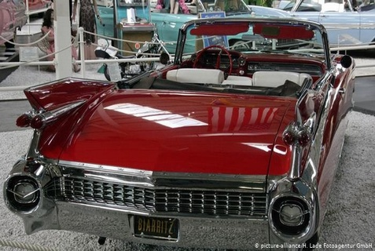
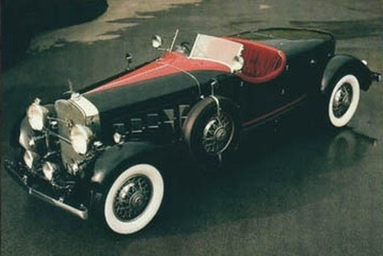

Cadillac Eldorado (1959)
Cadillac fue un éxito de Bruce
Springsteen en la década del 80. El protagonista de la canción solo sale con una chica porque posee un
Cadillac. Este automóvil de culto era muy apreciado ya en los año 50, pero con el tiempo fue perdiendo
adeptos. Los nuevos modelos no tuvieron tanto éxito entre el público en general, pero Cadillac Eldorado
fue y sigue siendo un ícono.
Cadillac V-16
El Cadillac V-16 (también conocido como
Cadillac Sixteen ) fue el modelo más alto de Cadillac desde su lanzamiento en enero de 1930 hasta 1940.
El automóvil con motor V16 fue el primero en los Estados Unidos, tanto extremadamente caro como
exclusivo. , con todo el chasis acabado a pedido personalizado. Solo 4076 se construyeron en sus 11
años, y la mayoría se construyó en su año de debut antes de que la Gran Depresión se afianzara. El
inicio de la Segunda Guerra Mundial redujo las ventas, resultando en su desaparición.